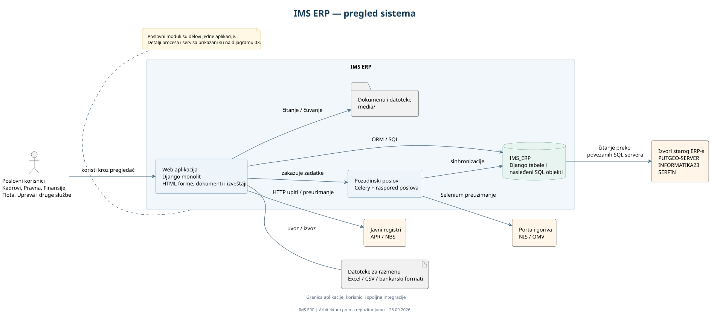
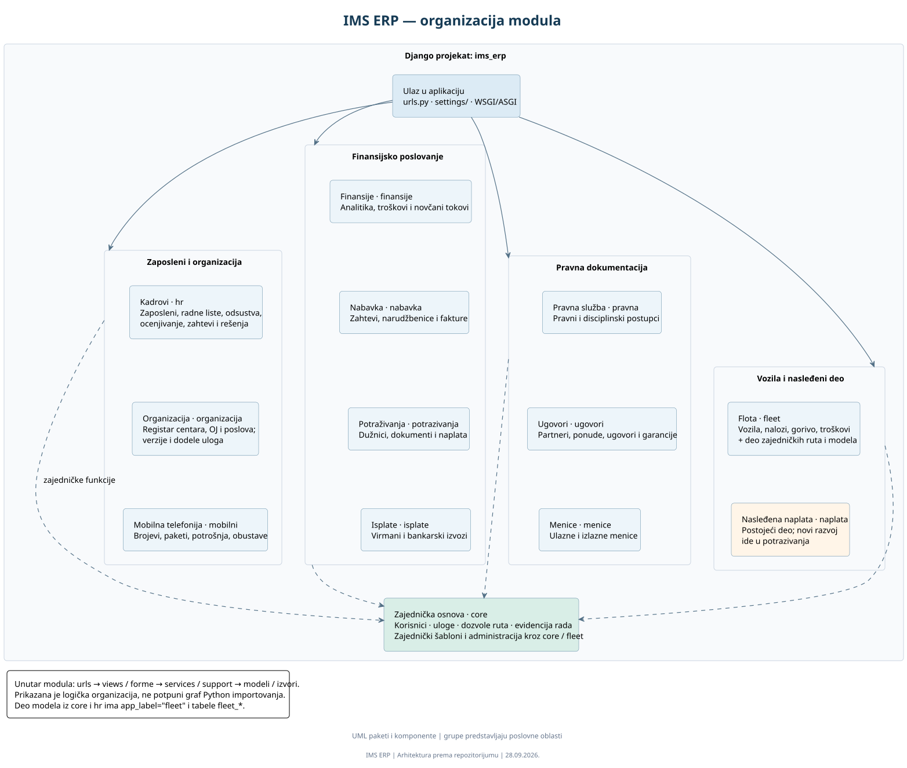
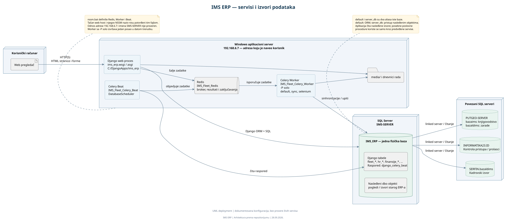
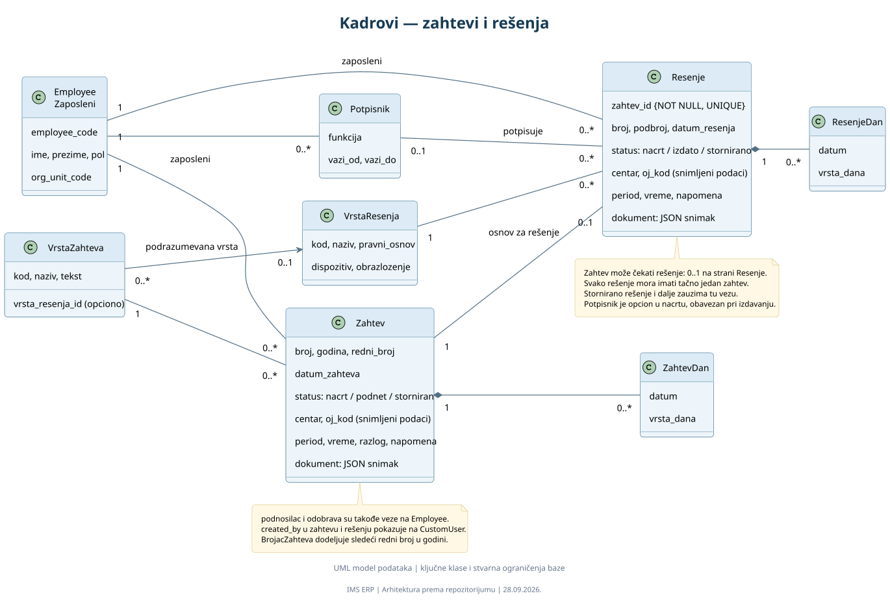
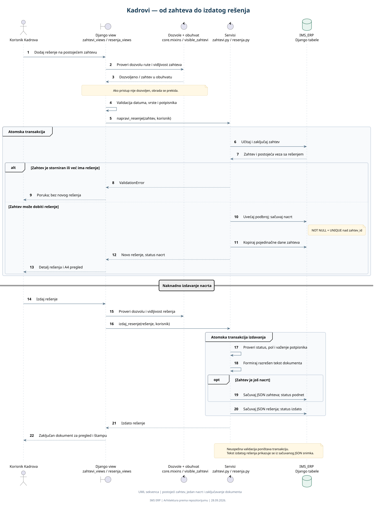
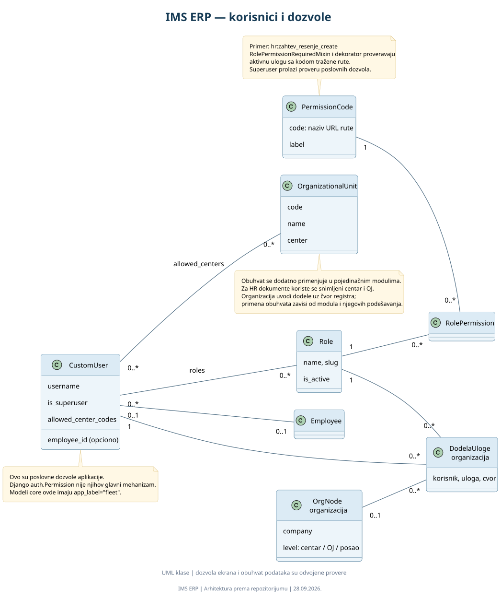

Pregled sistema
Korisnici, IMS ERP i spoljni izvori podataka.
Od pregleda aplikacije i njenih modula do servisa, modela podataka i toka izdavanja rešenja.
Počnite od pregleda sistema. Za uvećanje otvorite SVG; za izmene koristite PlantUML izvor i Alt+D u VS Code-u.

Korisnici, IMS ERP i spoljni izvori podataka.

Poslovne oblasti, Django moduli i zajedničke funkcije.

Windows, NSSM, Django, Celery, Redis i SQL Server.

Zaposleni, zahtevi, rešenja, vrste, dani i potpisnici.

Provere, kreiranje nacrta i izdavanje dokumenta.

Uloge, dozvole ruta i organizacioni obuhvat.